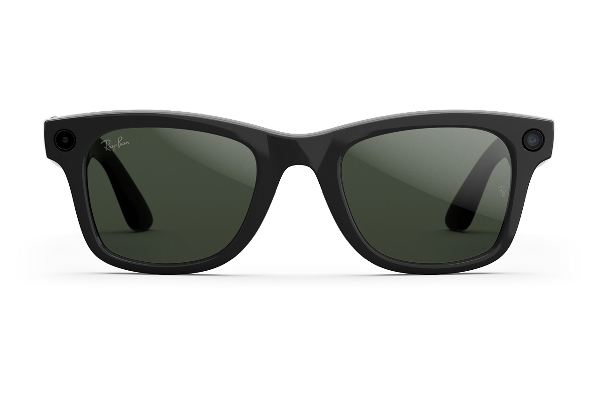
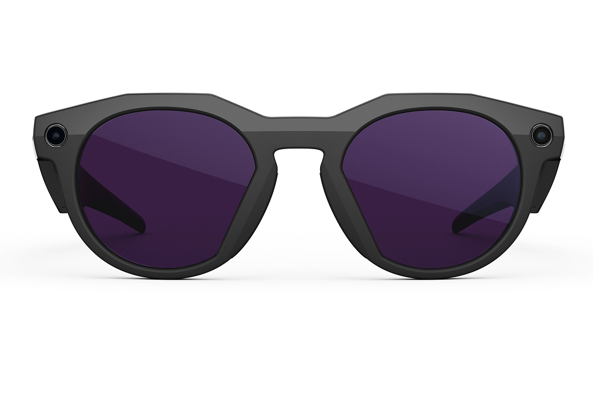
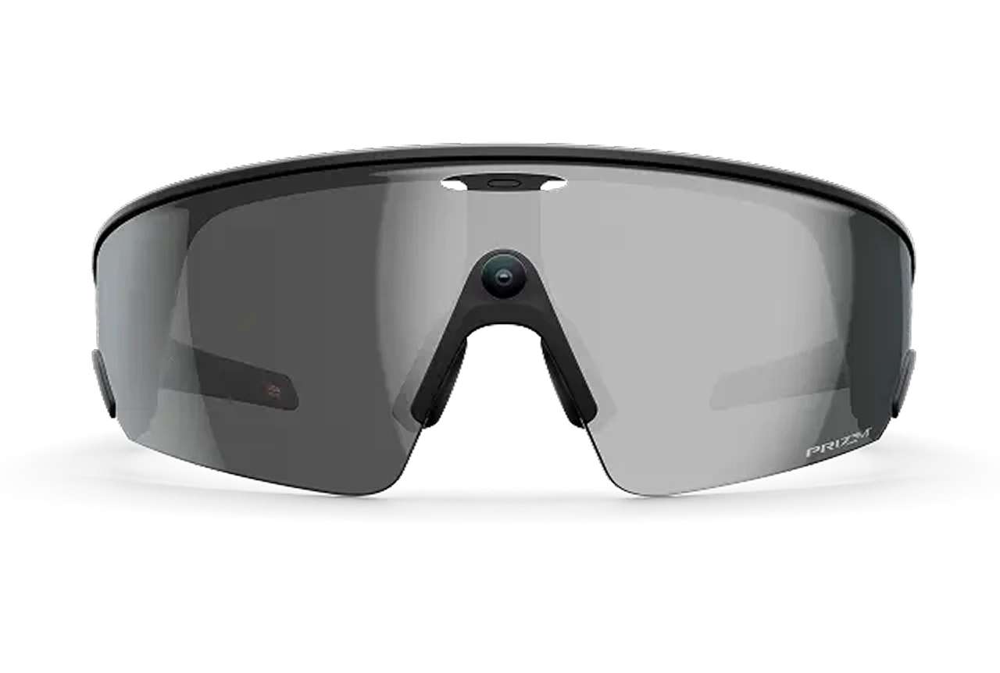

Ray-Ban Meta / Gen 2
Wayfarer
Everyday AI glasses. Core privacy evidence comes from capture, voice controls, visual AI use and companion-app settings.
Bystander signallingMONITORED
AI data boundariesREVIEW
Incident responseTRACKING
Prisim keeps the evidence behind a trust signal visible. A public numeric score will only appear after the incident record and product controls have been reviewed consistently across devices.

Everyday AI glasses. Core privacy evidence comes from capture, voice controls, visual AI use and companion-app settings.

Performance-focused glasses. Prisim will separate shared platform updates from sport and fitness-specific connections.

Athlete-focused AI eyewear. Connected workout and health services require a distinct evidence trail.
Can the wearer understand and change meaningful settings?
Can people nearby recognise recording and trust the signal?
What happens when a capture, voice request, or AI prompt leaves the device?
Are availability, defaults, retention and exceptions stated plainly?
Does the company respond meaningfully when a privacy control fails or is bypassed?